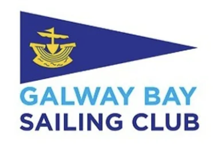

GBSC Sailing club
Welcome abroad! A small club found on the west of Ireland along the coastline of the wild Atlantic way. Galway Bay sailing club welcomes all passionate sailors from beginners to experienced professionals sailing various types of boats such as dinghies, cruisers and multihulls for both junior and senior members.
GBSC Club
Events :
The clubhouse features bar and cafetering facilities and is open on Sunday afternoons as well as Tuesday and Wednesday nights from April to September to accommodate various racing fleets. During the off-season, it remains open on Sundays for dinghy racing and on Wednesday nights for talks and social events.
Training:
Galway Bay Sailing Club provides comprehensive training programs for both adult and junior members, encompassing everything from basic sailing skills for beginners to more advanced techniques for seasoned sailors. These programs are designed to build confidence on the water, teaching participants to sail in light to medium winds without assistance, based on the Irish Sailing Small Boat Sailing Scheme Curriculum. The club ensures all necessary equipment, like wetsuits and buoyancy aids, are provided, making the courses accessible to those with limited sailing experience
Galway bay sailing club welcomes all new members: